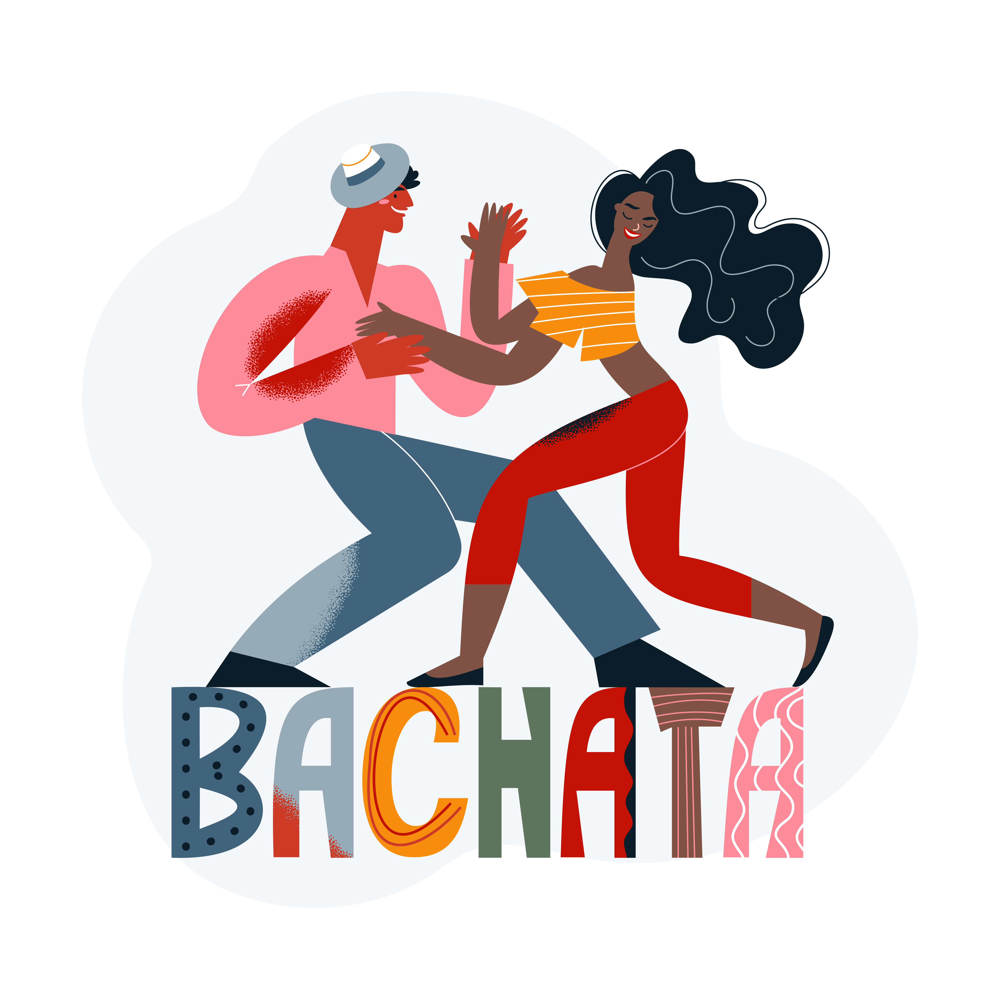

La Bachata Dominicana
Juan Luis Guerra - Bachata Rosa
La bachata es un ritmo musical de percusión y cuerdas originario de la República Dominicana, que tiene sus raíces en el son cubano y los ritmos africanos. Entre los instrumentos primarios se encuentran las guitarras, las marimbas, las maracas, la güira, los bongos y los timbales. El estilo musical es un híbrido, derivado de una mezcla del bolero y otros ritmos latinos y caribeños. Tiene sus inicios a comienzos del siglo XX.
Al principio, la bachata fue considerada por muchos en la República Dominicana como un ritmo de la clase baja o de los pobres, porque fue originalmente escuchada y bailada en los barrios pobres, en burdeles o en el campo. Por ello, muchos la despreciaban por considerarla vulgar, rústica y sin estilo. Durante la dictadura militar de Rafael Leónidas Trujillo (1930-1961), la bachata era reprimida y estaba relegada a los estratos más bajos de la sociedad. El propio dictador, que controlaba cada aspecto de la vida de las personas, se había encargado de que el merengue sustituyera a la bachata como la música del país. Con la muerte de Trujillo, su popularidad se acrecentó y comenzó a escucharse abiertamente en diferentes entornos públicos.
